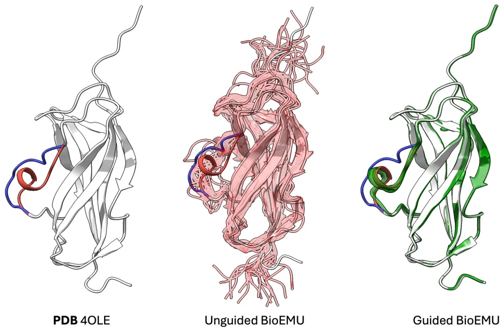
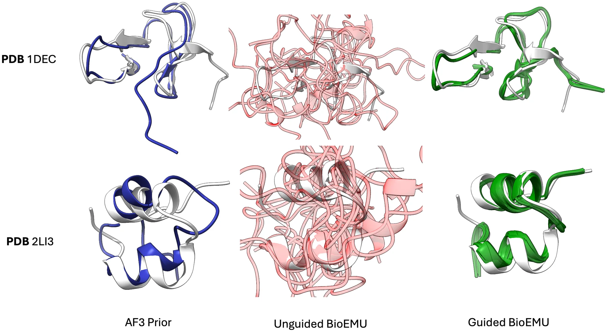
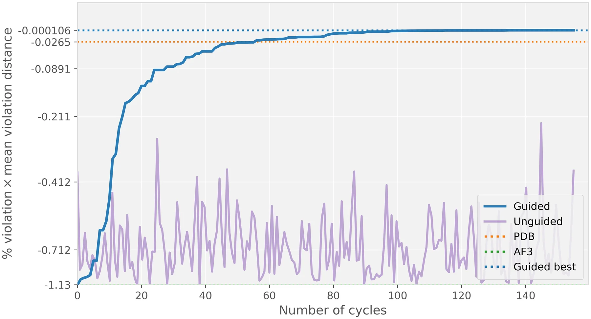
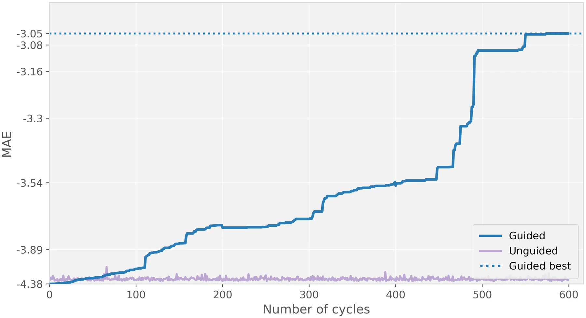

In short
Guiding a diffusion model usually needs a differentiable reward, but many widely used predictors of experimental data, such as random forests and lookup tables, have no gradients. We instead run an evolutionary search over the latent noise of a pretrained protein generator (BioEmu). With nuclear magnetic resonance (NMR) distance restraints as the reward, it recovers folds that AlphaFold3 and BioEmu get wrong. With a chemical-shift predictor, the score improves but the structures don’t, a clear case of optimizing a proxy.
What’s new. Guidance without gradients. Any black-box score can steer a protein generator, because the search perturbs structures through the generator’s own latent space and they stay close to physically plausible structures. As far as we know, this is the first time a chemical-shift predictor was used directly to guide a structure generator.
The differentiability barrier
Experiments give us measurements of a protein, but the hard part is going backwards, finding structures that explain them.
In our earlier work we did this by guiding AlphaFold3 with the gradient of the data likelihood. This works well when a differentiable model of the experiment is available, which is often not the case. Chemical shifts, the most widely measured and information-rich NMR signal, reflect each atom’s local environment and are a key example. Widely used chemical shift predictors, like UCBShift and SHIFTX2, are built from random forests, sequence alignment and lookup tables. They are mature and widely trusted, and they have no gradients.
Even when gradients exist, gradient guidance has several well-known limitations:
- a differentiable model is needed for every single observable,
- gradients are often noisy or ill-conditioned, so convergence is unstable,
- guidance strength has to be tuned under a fixed diffusion schedule, and
- it's easy to overfit to noise and end up with broken structures that need to be discarded or relaxed.
A genetic algorithm that respects proteins
The idea is simple. Keep a population of candidate structures, score them with any black-box function, keep the good ones, perturb them, and repeat. The hard part is the perturbation. A protein lives in a very delicate space, and changing its coordinates at random produces something that isn't a protein anymore. So we perturb it through the generator.

Three choices make it work for proteins:
- 1Single-amino-acid perturbations. We run the generator backwards from a structure to an intermediate noise level t twice, once with a deterministic ODE and once with a stochastic SDE. We then pick one amino acid at random, swap its ODE latent for its SDE latent, and decode forward again. The result is a new structure that's still physically plausible, with the change concentrated around that amino acid.
- 2No crossover. Classic genetic algorithms mix two parents. For proteins that creates destabilizing global jumps, so we turned it off.
- 3An annealing schedule. The noise level t decides how big the change is. Early on, t is high, so changes are large and exploratory. Later, t is lowered every generation, so changes get smaller for fine refinement. It's the same idea as simulated annealing in molecular dynamics, where the system is cooled down slowly.
Each pass has its own job. The ODE is deterministic, so its backward and forward passes undo each other: on its own, the round trip gives back the same structure. That keeps every amino acid we didn't pick exactly where it was. The SDE injects fresh random noise on the way back, so its latent is a new, random one that is still in distribution for noise level t. Swapping in the SDE latent for a single amino acid gives us a random change in that amino acid that the generator can still decode into a realistic protein.
Why annealing matters
The schedule was the piece we found the most important. With a fixed noise level, the search plateaus. The demo below is a toy version. The "protein" is a little chain whose shape comes from one latent number per amino acid (our stand-in for a generator), and the score is a non-differentiable, NMR-style count of violated distance restraints. We start from a "prior prediction" whose tail is misfolded, just like we initialize from AlphaFold3 in the paper.
Evolving a misfolded chain with a black-box score
Try all three schedules. Their curves stay on the plot for comparison. A large fixed step keeps exploring but can't refine. A small fixed step refines, but it can't get the tail out of the wrong fold. Annealing does the big moves first and the small ones later. The score is fraction violated × mean violation, the same form as in the paper, with clashes counted as violations. It has no useful gradient, and the search never needs one.
Results
A warm-up with pairwise distances
We first tested a clean case. Protein 4OLE has a segment (residues 60–68) that appears in two conformations, a helix (A) and a strand (B). We took short Cα–Cα distances from conformation A as restraints, started from B, and let the search run. BioEmu on its own only produces B-like structures, and with guidance it recovered the helix.

Recovering the right fold with NOE restraints
Next we used real NMR restraints, nuclear Overhauser effects (NOEs), which act as noisy pairwise distances between atoms. The reward was a non-differentiable violation score, the fraction of violated restraints times their average violation. That way it penalizes both widespread small errors and a few severe ones. For the peptides 1DEC and 2LI3, AlphaFold3's predictions contained misfolded regions and unguided BioEmu didn't match the experiment either. Guided BioEmu reduced the violations and recovered the experimental folds.


Chemical shifts, the hard case
Finally, the goal we started with. We used UCBShift as the black-box predictor and scored structures by how well their predicted Cα shifts matched, on synthetic shifts for 1DEC and on real experimental shifts for 1DFU.

The score kept improving. But the structures did not converge to the experimental ensemble. This is a central result of the paper. Agreeing with a chemical shift predictor doesn't mean agreeing with the real structure. In ML terms, the search found adversarial examples for the reward model. It is consistent with what we saw in our force-field paper, where UCBShift's predictions turned out to be only loosely tied to the local physics. So the bottleneck isn't the search anymore, it's the predictor. Physically grounded predictors, like the one based on a machine learning force field (MLFF) from our force-field paper, could make better rewards.
How well the data guided the search varied a lot. Pairwise distances were a proof of concept, NOEs gave robust recovery of the experimental folds, and chemical shifts improved the score without giving accurate structures. There are limits on both sides. BioEmu constrains which conformations we can reach at all, and current chemical shift predictors aren't physically grounded enough to steer toward the right answer.
Cite
@inproceedings{bojansellam2025seek,
title = {Seek and You Shall Fold},
author = {Bojan Sellam, Nadav and Bojan, Meital and Schanda, Paul and Bronstein, Alex},
booktitle = {Machine Learning in Structural Biology Workshop},
year = {2025}
}